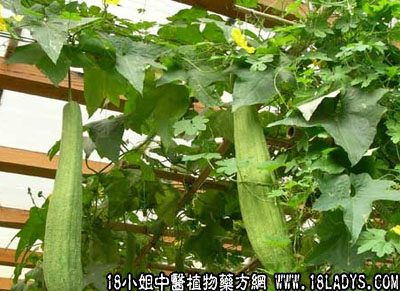

别名：絮瓜。
植物名：水瓜。
生长环境：本品是一年生栽培，落叶植物，多栽培于菜地或村庄附近或屋舍旁，为夏季常见的瓜类。
分布：热带地区，我国南部各省各地均有栽种。
入药部分：老水瓜晒干。
采集期：秋季。
自采地点：家种。
性味：性寒、味甘。
功能：利水、解热毒。
主治、用量和用法：1、喉痛、白喉：干用3钱至1两，清水煎服；2、麻疹气促：生用，切开，蒸熟，取汁饮。
（方歌）解热利尿有水瓜，喉痛白喉煎作茶，切开蒸熟取汁饮，麻疹气促效更好。
禁忌：孕妇及体质虚寒者慎用。
本文解释权归中药大全，本文地址：https://www.daquan.com/post/1607.html